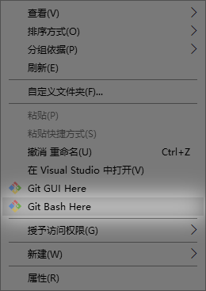
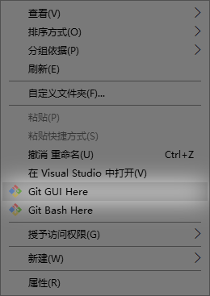
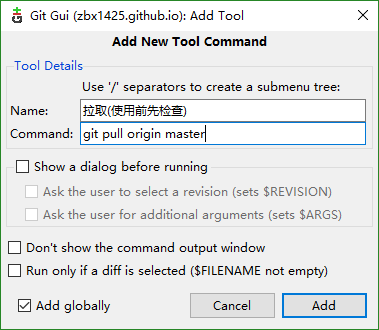
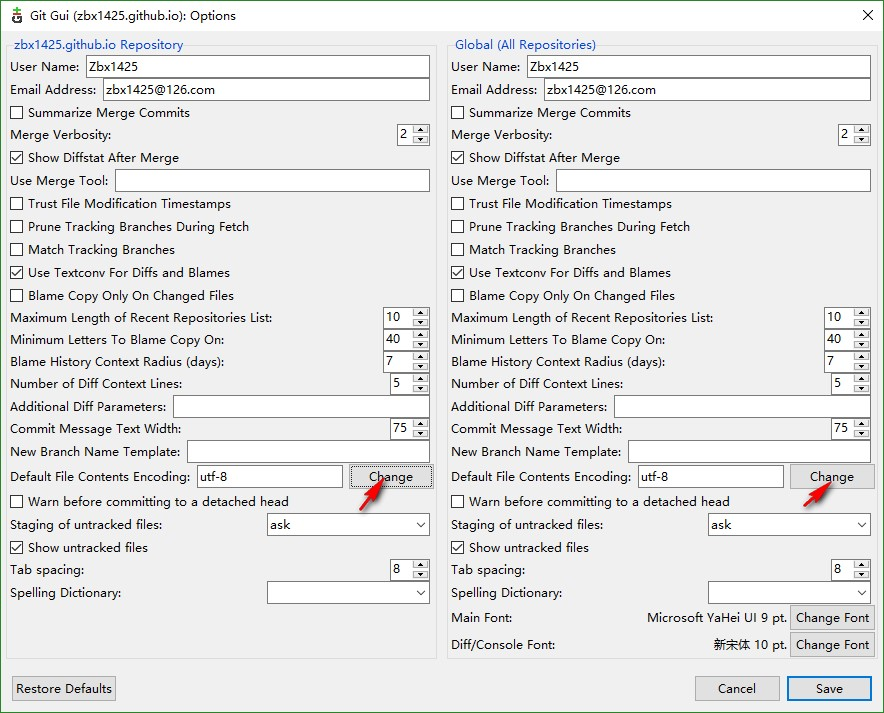
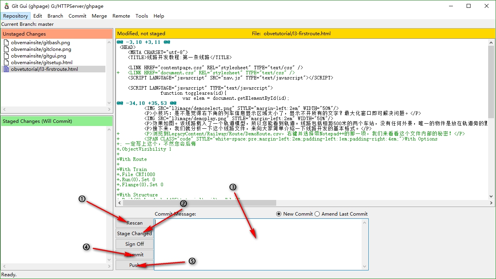
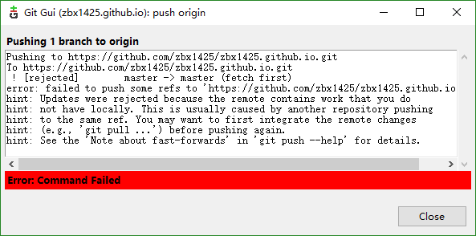
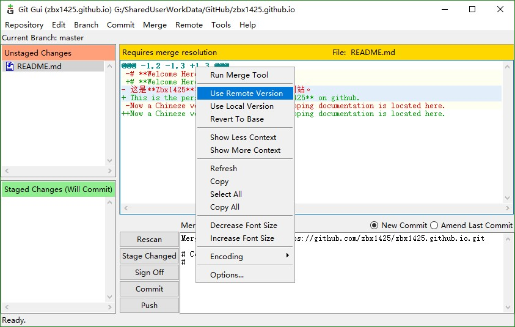

由于本项目使用Coding进行代码托管和版本管理，您需要使用git工具来和我们保持同步。
如果您没有安装Git客户端，请前往 git_scm官网 下载并安装官方Git客户端。
如果您没有Coding账号，请前往 Coding官网 注册一个。
请您给我发送一封Email，其中注明您的Coding账号。我在阅读后会给您回信并在Coding上发送合作申请，请注意查收。在等待结果时可以继续下面的步骤。
找一个位置方便的文件夹用来保存网站的所有文件。您将在这里离线开工。文件夹不一定要是空的，因为数据会存在子文件夹里。
进入这个文件夹，打开右键菜单并选择Git Bash Here。
将弹出一个命令行窗口。等待程序初始化完成，在窗口中打出一行以 $ 结尾的文字时，输入以下三条指令。每条指令复制粘贴更改后回车。
git config --global user.name "更换为您注册的用户名，不要去掉引号"
git config --global user.email "更换为您注册的Email，不要去掉引号"
git config --global credential.helper wincred
注意不要错字，不要错大小写，复制粘贴最好（粘贴是右键菜单中的Paste）。
还是那个窗口，继续输入以下代码：
git clone https://git.coding.net/zbx1425/zbx1425.coding.me.git
由于数据量较大，请稍等一会儿。可能需要一段时间。
如果实在奇慢无比，仿佛It's going to take forever，请
完成后，执行git remote -v，确认回显文字。如果自动添加正常的话，应当显示如此：
origin https://git.coding.net/zbx1425/zbx1425.coding.me.git (fetch)
origin https://git.coding.net/zbx1425/zbx1425.coding.me.git (push)
如果没有显示，则需要手动添加远程站点。执行以下指令。
git remote add origin https://git.coding.net/zbx1425/zbx1425.coding.me.git
完成之后再次执行git remote -v，此时应当出现正常的远程站点信息显示。
最后执行这条指令，再次确认本地站点与远程站点数据保持同步。
git pull origin master
好的，设定完成。已与远程代码库建立联系。
进入zbx1425.github.io文件夹，打开右键菜单并选择Git GUI Here。
为方便我们之后的操作，请选择顶部菜单中的Tools -> Add，并在对话框中填写如下内容。Name一栏可随便。之后点击Add。
选择顶部菜单中的Edit -> Options，并点击图示的两个按钮，在弹出的下拉框中选择Unicode (UTF8)。这会解决中文乱码的问题。
用您偏好的网页编辑软件直接开始修改即可。不需联网。
在编辑时请注意保存为不带BOM的UTF-8文字编码格式。
您必须接受合作邀请之后才可以上传。如果还没有收到请稍等。
进入zbx1425.github.io文件夹，打开右键菜单并选择Git GUI Here。
如图，首先点击Rescan搜索改动文件，可以看到改动过的文件出现在左上角。然后点击State Changed标记更改状态，可以看到它们移动到左下角。接下来在大文本框里写一行提交信息（即你干了什么，动词直接开头，不加“了”等过去式词语），之后点击Commit提交更改，Push上传更改。
有时点击Push时候会失败，并弹出一个对话框，里面含有fast-forward字样，如图。
这是因为在您上次提交之后至这次提交之前，翻译组的其他成员也修改了在线文档，使得您本地的代码和在线的代码不同步了。遇到这个情况，点击Tools菜单中您在第7步添加的列表项，即可拉取在线代码的更新到本地。然后您就可以再次点击Push了。
事实上，我们建议您每天开工前都执行一下拉取操作，来保持时刻同步。
在最糟糕的情况下，点击拉取时也会报错，报出的错误中含有CONFLICT字样，这表明您和另一位“撞车”了——同时往不同方向翻译了同一篇文档。点击确定后，软件将自动显示出含有冲突的文档，以及两方不同修改方向的修改内容：
您可以比较这些内容，并且选择Use Remote Version（按照远程那边一版走），或者Use Local Version（按照自己本地一版走），或者打开文件手动修改，写成同时具有两版优点的一版，然后再选择Use Local Version。全部修改完之后，按Commit和Push修正错误。
因为网络原因，也可能出现一些其它的错误。对于其它的报错信息，可以重试几次。如果怎样都不行，请和其他成员联系解决。
为了尽量避免撞车，项目组使用Coding的任务功能进行任务分配。您可以点击 这里 进入页面。
在这里可以看到所有正在施工或准备施工的事项。当准备开工时，点击右上角的新建任务按钮。
在左边输入任务内容（和提交信息要求相同）和有没有都行的描述文字，右边执行者点击选择自己，标签选择一个合适的标签，不用选截止日期，然后点击创建即可。
您也可以把它用作一个备忘录，或者一个事项列表。总之，这是为了使团队成员清晰掌握互相的动向。大家都给自己认领任务，不互相干涉，就不会撞车了。